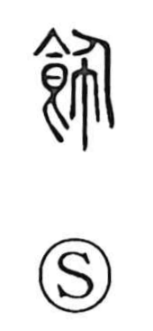

飾

Kun: kazaru, kazari | On: shoku
decorate ・ decoration ・ adorn ・ purify
Explanation
In early script this character joins the food element—an archaic form depicting vessels set before a person, the ancestor of 食—with 巾, a cloth. It originally referred to the cloth worn at the front of the body and used to wipe tableware, removing defilement and thereby purifying the meal. In sacrificial practice, the same idea extended to cleansing the ox before offering. Related graphs illuminate the ritual nuance: 拭 denotes purification with a ritual implement used to expel impurity, and 刷 shows wiping the hands with a cloth hanging from the belt. From this core of wiping and purification, the sense later broadened to ‘decorate.’